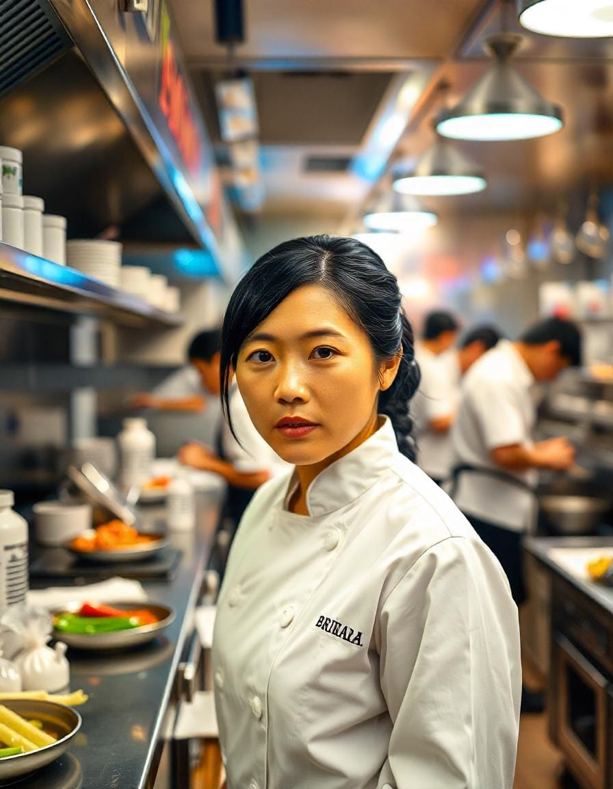

Personal - Sakura Dreams
1. Chef Principal

- Nombre:
- Puesto:
- Descripción Puesto:
- Supervisa toda la cocina, el desarrollo del menú y el control de calidad.
- Biografía:
- Hiroshi Takahashi es el corazón y el alma de Sakura Dreams. Con más de 20 años de experiencia en cocina japonesa,
Hiroshi se formó con chefs de renombre en Kioto y Tokio antes de ganarse la reputación de maestro de los platos japoneses
tradicionales y modernos. Se especializa en kaiseki (comidas de varios platos) y sushi, aportando un toque artístico a
cada plato. La pasión de Hiroshi por los ingredientes de temporada y su meticulosa atención al detalle lo han convertido
en una figura célebre en el mundo culinario. Fuera de la cocina, le gusta practicar la caligrafía y explorar la
naturaleza en busca de inspiración.
2. Cocinero Secundario 1

- Nombre:
- Puesto:
- Sous Chef (Pastelería y Postres)
- Descripción Puesto:
- Gestiona la sección de repostería y postres, asegurando un acabado perfecto para cada comida.
- Biografía:
- Emiko Sato es la fuerza creativa detrás de los exquisitos postres de Sakura Dreams. Emiko, graduada de Le Cordon Bleu en Tokio,
combina sabores tradicionales japoneses con técnicas modernas para crear dulces inolvidables como el tiramisú de matcha y los macarons de sakura.
Su viaje comenzó en la cocina de su abuela, donde aprendió el arte del wagashi (dulces japoneses). Emiko también es una defensora
de la sostenibilidad y utiliza ingredientes locales y orgánicos siempre que es posible. En su tiempo libre le gusta pintar y hacer senderismo.
3. Cocinero Secundario 2

- Nombre:
- Puesto:
- Descripción Puesto:
- Lidera el equipo de sushi y garantiza los más altos estándares de preparación de sushi.
- Biografía:
- Kenji Nakamura es un virtuoso del sushi con más de 15 años de experiencia. Nacido en Hokkaido, Kenji creció rodeado de mariscos frescos, lo que inspiró su amor por el sushi.
Se formó en la prestigiosa Academia de Sushi de Tokio y ha trabajado en restaurantes de sushi con estrellas Michelin en todo Japón.
Kenji es conocido por su precisión y capacidad para resaltar los sabores naturales del pescado.
También es un sumiller de sake certificado y combina sus creaciones de sushi con el sake perfecto. Fuera del trabajo, a Kenji le gusta pescar y tocar el shamisen.
4. Cocinero Secundario 3
- Nombre:
- Puesto:
- Especialista en Teppanyaki y Grill
- Descripción Puesto:
- Se encarga de teppanyaki y platos a la parrilla, brindando una experiencia gastronómica interactiva.
- Biografía:
- Akira Tanaka es el maestro de la parrilla teppanyaki en Sakura Dreams. Con talento para la interpretación y un profundo conocimiento de los sabores,
Akira entretiene a los invitados mientras prepara de manera experta platos como mariscos teppanyaki y carne wagyu.
Se formó en Osaka, donde perfeccionó sus habilidades en restaurantes de teppanyaki de alta energía.
A Akira también le apasiona orientar a jóvenes chefs y compartir su conocimiento de las tradiciones culinarias japonesas.
En su tiempo libre practica artes marciales y le gusta explorar los mercados de comida callejera.
5. Cocinero Secundario 4
- Nombre:
- Puesto:
- Descripción Puesto:
- Se centra en platos de ramen, udon y soba, brindando comodidad en cada plato.
- Biografía:
- Yuki Matsuda es el experto en ramen y fideos de Sakura Dreams. Nacido en Fukuoka, lugar de nacimiento del tonkotsu ramen, Yuki ha dedicado su carrera a perfeccionar el arte del ramen.
Pasó años estudiando con maestros de ramen en Japón y en el extranjero, aprendiendo los secretos de elaborar caldos ricos y fideos elásticos.
Yuki es conocido por sus innovadoras creaciones de ramen, que combinan sabores tradicionales con toques modernos.
Cuando no está en la cocina, le gusta andar en bicicleta y experimentar con nuevas recetas de ramen en casa.